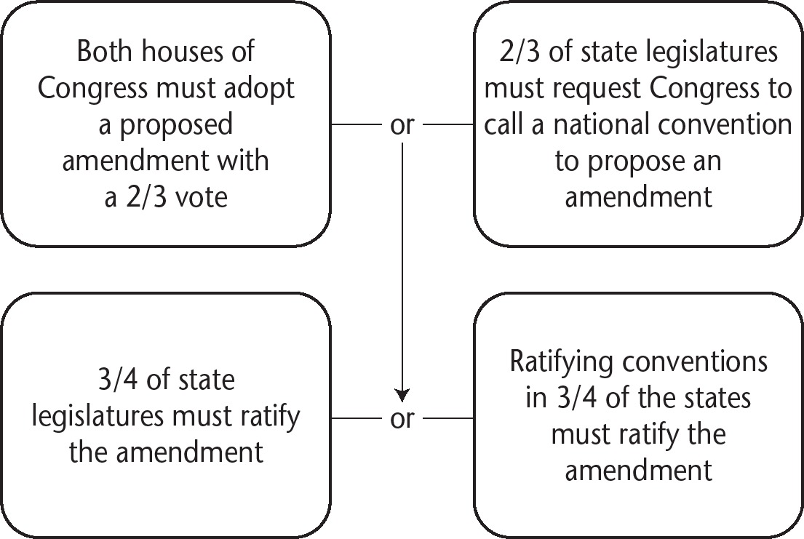

Chapter 3
Foundational Concepts and Documents
I.
FUNDAMENTAL CONCEPTS OF AMERICAN GOVERNMENT
A.LIMITED GOVERNMENT
The theory that the power of the government and political leaders would be restricted in order to protect natural rights was built into the Constitution by specifically listing the powers of government, the powers denied to the government, and the rights of the people. The following ideas represent various aspects of the concept of limited government:
1.Natural Rights
According to the Enlightenment-era philosophers such as John Locke, certain freedoms are guaranteed to all citizens. The authors of the Constitution believed that governments existed not only to provide order, but also to protect the natural rights of citizens. Natural rights are referred to as “unalienable Rights” in the Declaration of Independence.
2.Popular Sovereignty
The power and authority of government belong to the people.
a.Popular sovereignty is evident in the Declaration of Independence with the phrase, “Governments are instituted among men, deriving their just powers from the consent of the governed.”
b.Popular sovereignty is found in the Constitution, specifically in the well-known opening phrase, “We the people.”
A helpful way to remember the meaning of the term popular sovereignty:
Popular = people
Sovereign = ruler
Popular sovereignty = the people rule
3.Social Contract
The Enlightenment philosopher John Locke indicated that power and authority belonged to the people (popular sovereignty). As a result, Locke proposed, government existed because the people voluntarily gave up some power to the government in exchange for security in what he called a social contract. However, the government was required to protect the natural rights of the people. If the government failed to uphold the agreement, the people had the right to rebel. Locke’s social contract represented a shift from the accepted theory of the time—the divine right of kings to rule. The social contract became the foundation of the argument presented in the Declaration of Independence.
4.Republicanism
A system of government in which citizens vote for individuals to represent their interests and make decisions about policy. The term republicanism is essentially synonymous with representative or indirect democracy.
5.Separation of Powers
The Constitution implements the concept of separation of powers by granting each branch specific areas of authority (power). This idea is based on the work of Enlightenment philosopher Baron de Montesquieu.
6.Checks and Balances
The Constitution grants specific mechanisms to each branch of government for limiting the actions of the other branches. This is called checks and balances. The idea behind checks and balances is that when a written constitution gives each branch of government the authority to block actions by the other branches, no one branch or individual accumulates too much power. Checks and balances is another democratic ideal that originated with Baron de Montesquieu and is related to the separation of powers.
7.Federalism (Division of Powers)
A system of government in which a constitution assigns different types of authority and responsibility to national and state governments. The Constitution created a government based on federalism, replacing the confederate style of government that existed under the Articles of Confederation.
8.Rule of Law
A system that holds all individuals, including leaders, accountable to the same laws, and which applies all laws to everyone regardless of their position. The foundation of the law is a document, the Constitution, as opposed to an individual, the king. Under such a system, every person, including government officials, is accountable to the law, and the process of justice is fair, equitable, and available to all citizens.
9.Majority Rule and Minority Rights
This concept addresses the possibility of tyranny by the majority—a situation in which a majority may oppress the minority. The Constitution protects minority rights from being violated, even when such violation is broadly supported by voters. The Bill of Rights, advocated by the Anti-Federalist movement and adopted shortly after the Constitution itself, establishes individual rights, or “liberties,” as part of fundamental law. The Framers relied upon an independent judiciary (the courts) to enforce these protections.
The distinction between the terms separation of powers and division of powers is frequently confusing for students. Separation of powers refers to the allocation of powers among the three branches of government (horizontally). Division of powers refers to the fact that powers are divided vertically, between federal and state (and local) governments. Pay attention to these terms in multiple-choice questions and use them correctly in the FRQs.
B.FOUNDING DOCUMENTS
1.Declaration of Independence
Signed by the Second Continental Congress, the Declaration of Independence announces the political separation of the colonies from Great Britain. Primarily authored by Thomas Jefferson, it is based significantly on the philosophy of John Locke and his ideas relating to natural rights and the social contract.
a.Natural rights and the social contract are evident in the statement in the Declaration of Independence that
all men are created equal, that they are endowed by their Creator with certain unalienable rights, that among these are Life, Liberty, and the pursuit of Happiness. That to secure these rights, Governments are instituted among Men, deriving their just powers from the consent of the governed.
b.The Declaration goes on to proclaim a right to rebel against and replace an unjust government. It provides an extensive list of grievances, or “repeated injuries and usurpations” to justify the separation. For this reason, the Declaration is often referred to as a “breakup letter.”
c.The Declaration has served as the inspiration for numerous similar documents, including the Seneca Falls Declaration of Sentiments (1848) and the United Nations Universal Declaration of Human Rights (1948). It is regarded as the inspiration for many modern countries’ founding statements.
2.U.S. Constitution
The Constitution is a relatively brief document that sets out the structure and functions of this new republican form of government. It is frequently vague and lacking in detail. The Framers anticipated that future adaptation would be necessary to adjust this radical experiment in government to real-world conditions. Its simple provisions have been expanded and interpreted since its adoption. For this reason, the Constitution is often referred to as a “living document.”
Preamble
This introduction to the Constitution states the six legitimate purposes of the government created in the document.
Article I: The Legislative Branch
This article creates a bicameral legislature, lays out electoral requirements and legislative procedures, and specifies the powers of Congress.
Article II: The Executive Branch
This article defines the qualifications for office and describes powers and duties of the president. It describes the process for choosing the president through the Electoral College, the presidential oath of office, and the Office of the Vice President.
Article III: The Judicial Branch
This article creates the Supreme Court of the United States and defines its jurisdiction. It grants Congress broad powers with regard to creating and structuring lower federal courts.
Article IV: Relations Among States
This article includes several key clauses that regulate relationships among the states, and between the states and the national government.
Article V: Amendment Process
This article reflects federalism by describing how the U.S. Constitution may be changed through proposal at the national level and ratification by the states.
Article VI: National Supremacy
This article states that federal laws and treaties are the highest law of the land and are binding on states. It requires that certain government officials swear an oath to support the Constitution and prohibits a religious test for holding office.
Article VII: Ratification Process
This article required nine states to initially ratify the Constitution in order for it to become effective as to those states.
3.Amendments to the Constitution
Amendments 1–10: The Bill of Rights
The first ten amendments were added to the document as a compromise to address the concerns of the Anti-Federalists. The Federalists, on the other hand, felt that individual rights were already protected by the state constitutions.
Amendments 11–27
These amendments were added after the Bill of Rights and address the needs of a changing nation, procedural concerns, civil rights, and the expansion of suffrage.
A common mistake students make is confusing the Declaration of Independence with the Preamble to the U.S. Constitution. The Declaration describes unalienable (natural) rights: life, liberty, and the pursuit of happiness; and provides justification for the colonies to politically separate themselves from England. The Constitution creates and defines our government. The Preamble is the first paragraph of the Constitution, which lays out the purposes of the new government.
II.
MODELS OF REPRESENTATIVE DEMOCRACY
The writers of the Constitution sought a compromise among the three main competing models of representative democracy: participatory democracy, pluralist democracy, and elite democracy. Democracy in the United States today includes elements of each of these theories.
A.PARTICIPATORY DEMOCRACY
1.This is a type of democracy that focuses on popular sovereignty and that governmental authority should be in the hands of individuals selected by the people. Authority in a representative democracy is based on the will of the numerical majority in what is called majoritarianism. This type of democracy emphasizes the wide-ranging participation of citizens as individuals, rather than as group members or powerful elites.
2.The clearest example of participation in democracy is voting for public officials.
3.Citizens in democracies, however, have numerous options for participation in government, including engaging in political discussions, signing petitions, attending town hall meetings, contacting officials, and participating in various forms of political protest, such as demonstrations and walkouts.
B.PLURALIST DEMOCRACY
1.Pluralism is the idea that democracy should incorporate the influence of various groups of individuals with shared beliefs, without allowing any one group to dominate. Various groups compete for power and influence, but no one group is able to establish long-term control.
2.Pluralism today is evidenced by the large number of interest groups active in influencing policy because they are concerned about a particular issue or issues.
3.Interest groups today impact policy by donating to campaigns, lobbying, testifying at hearings, providing research, and helping to write laws.
C.ELITE DEMOCRACY
1.Elite democracy embodies the idea that government authority in a democracy tends to migrate to the hands of a small group of educated and wealthy individuals and reduce popular participation.
2.It can be argued that the influence of elites is reflected in the membership of our governmental institutions. Many members of Congress, for example, have a net worth of $1 million or more, and very few members come from a working-class background. Supreme Court justices are usually graduates of prestigious law schools.
D.THE CONSTITUTION AND MODELS OF DEMOCRACY
1.Participatory Democracy
a.The Constitution’s method for selecting members of the House of Representatives, which has always been by popular vote, is a clear example of participatory democracy.
b.The First Amendment enables participation by citizens because it protects freedom of speech, religion, assembly, press, and petition.
2.Pluralist Democracy
a.The Constitution advances pluralism through a complex system of power-sharing. By spreading power among states and the three federal branches, the Framers intentionally created an environment in which competing groups could influence policy through different access points.
b.For example, advocacy groups for farmworkers, commercial farming interests, and consumers of agricultural products may advance their interests through different branches of state and federal governments. This ensures a process of give-and-take resulting in compromise, with no single group dominating.
3.Elite Democracy
a.The method for selecting the president through the Electoral College, first established in Article II of the Constitution, provided originally for the selection by states of independent electors, who would take the citizens’ wishes into consideration but vote conscientiously for the best choice of leaders. (This system has evolved so that electors are now determined by the popular vote in each state.)
b.Senators were originally chosen by state legislatures, not by popular vote. These legislatures were likely controlled by members of the elite class.
E.“BRUTUS NO. 1” AND MODELS OF DEMOCRACY
1.Participatory Democracy
Anti-Federalists favored participatory democracy. Their views were well-expressed in “Brutus No. 1,” an essay written by the prominent Anti-Federalist Robert Yates of New York under the pen name “Brutus” in 1787. In the essay he argued that creating a powerful central government would be a danger to personal liberty.
2.Pluralist Democracy
The essay argued that democracy is most effective if there are few competing factions. It warned that the large republic contemplated by the Constitution would involve far too many different interests (pluralism), which posed a threat to the interests of individual citizens.
In a republic, the manners, sentiments, and interests of the people should be similar. If this be not the case, there will be a constant clashing of opinions. . . . This will retard the operations of government, and prevent such conclusions as will promote the public good. [excerpted from “Brutus No. 1”]
3.Elite Democracy
Brutus argued that the large size of the republic would make the rulers under the proposed Constitution too distant from the interests of the people they represented, presenting an elitist threat to participatory democracy. The Anti-Federalists feared that the leaders would become elites who were not accountable to the people.
In so extensive a republic, the great officers of government would soon become above the control of the people, and abuse their power to the purpose of aggrandizing themselves, and oppressing them. The trust committed to the executive offices, in a country of the extent of the United States, must be various and of magnitude. [excerpted from “Brutus No. 1”]
F.“FEDERALIST NO. 10” AND MODELS OF DEMOCRACY
1.Participatory Democracy
“Federalist No. 10” is an essay written by James Madison in The Federalist Papers, a collection of 85 essays and articles written by Madison, Alexander Hamilton, and John Jay to promote the ratification of the Constitution. In the essay, Madison pointed out that the principle of popular vote would prevent any group (faction) from dominating if it held less than majority support. “If a faction consists of less than a majority, relief is supplied by the republican principle, which enables the majority to defeat its sinister views by regular vote,” he wrote in the essay. (It is noteworthy that only white, male property owners were permitted to vote under state laws at the time the Constitution was adopted.)
2.Pluralist Democracy
Madison was extremely concerned with the problem of factions, associations of people with common interests, which he realized were a threat to democracy. In these groups, he saw the possibility that fundamental rights and liberties could be violated. Madison found the solution to the problem of factions in two places.
a.Madison found the first solution to the factions problem in the effect of representative government by which highly qualified leaders make policy decisions (see item C, “Elite Democracy,” in the “Models of Representative Democracy” section above).
b.Second, Madison argued that the problem of factions could be overcome through the creation of a large republic in which many groups compete for influence. Under such a system, no single group would be able to dominate the others.
Extend the sphere, and you take in a greater variety of parties and interests; you make it less probable that a majority of the whole will have a common motive to invade the rights of other citizens. . . . [James Madison in “Federalist No. 10”]
Furthermore, the federalist framework allowed for concerns to be addressed at a local or national level, depending upon the issue involved.
3.Elite Democracy
Whereas elite democracy is often viewed negatively today, Madison believed that elites should have weighted influence in making public policy. This idea is reflected in his assertion that a republic (representative democracy) was superior to a democracy (direct or pure democracy) because educated and thoughtful people would be elected to make policy. He argued that a republic would
refine and enlarge the public views, by passing them through the medium of a chosen body of citizens, whose wisdom may best discern the true interest of their country, and whose patriotism and love of justice will be least likely to sacrifice it to temporary or partial considerations. Under such a regulation, it may well happen that the public voice, pronounced by the representatives of the people, will be more consonant to the public good than if pronounced by the people themselves. [James Madison, in “Federalist No. 10”]
III.
EVOLUTION OF CONSTITUTIONAL PRINCIPLES
A.THE ARTICLES OF CONFEDERATION
1.The Articles of Confederation was the newly independent colonies’ first attempt at creating a central government. It established the government of the former colonies as a sovereign country by distributing power mainly among the 13 independent states with a weak central government. This government allowed the states to cooperate on some issues but remain independent.
Each state retains its sovereignty, freedom, and independence, and every Power, Jurisdiction and right, which is not by this Confederation expressly delegated to the United States, in Congress assembled.
The said States hereby severally enter into a firm league of friendship with each other, for their common defense, the security of their liberties, and their mutual and general welfare, binding themselves to assist each other, against all force offered to, or attacks made upon them, or any of them, on account of religion, sovereignty, trade, or any other pretence whatever. [Article II, The Articles of Confederation, 1781]
B.SHAYS’ REBELLION
1.Following the Revolutionary War, many farmers in Massachusetts found themselves burdened with crushing debt and facing the foreclosure of their property.
2.The government, under the Articles of Confederation, did not have the power to tax and, as a result, could not pay the veterans the money they were owed for their military service.
3.Daniel Shays led an uprising of farmers who were facing the loss of their land. The rebellion proved difficult for the government to control due to the lack of a standing military force.
4.Shays’ Rebellion convinced leaders that a stronger national government was needed to maintain order and protect property.
C.HOW THE CONSTITUTION ADDRESSED THE WEAKNESSES OF THE ARTICLES OF CONFEDERATION
| Weaknesses of the Articles of Confederation | How Addressed in the Constitution |
| Single-branch national government; no national executive to enforce laws or judiciary to settle disputes between the states. | Created a three-branch national government consisting of a legislative branch with power to make laws, an executive branch to enforce laws, and a judicial branch to interpret and apply laws. |
| Congress lacked power to tax and raise money to run the national government. | Congress was given the authority to tax and borrow. |
| Congress lacked the power to regulate interstate commerce, which led to an unstable and ineffective economy. | Congress was given the authority to regulate interstate and international trade. |
| Congress did not have the power to maintain an army and navy. | Congress was given the authority to raise and maintain military forces. |
| Unicameral Congress gave each state one vote regardless of population. | A bicameral Congress gave each state representation proportional to its population in the House of Representatives and equal representation (two seats per state) in the Senate. |
| A supermajority (two-thirds, or 9 of 13 states) was required in order to pass laws. | A simple majority of both houses was required in order to pass laws. |
| The Articles could not be amended without the unanimous support of the states. | Proposed amendments to the Constitution required a two-thirds affirmative vote in each chamber of Congress. Ratification of amendments needs affirmative votes from three-quarters of the states. |
IV.
WRITING THE CONSTITUTION: A BUNDLE OF COMPROMISES
A.THE GREAT (CONNECTICUT) COMPROMISE
1.Balancing Large and Small States’ Needs
A fundamental issue in drafting the Constitution was resolving the question of how states should be represented in Congress. More populous states, led by Virginia, favored a scheme in which representation would be based on population. Smaller states, led by New Jersey, favored a plan that guaranteed equal representation for all states regardless of size. The Great Compromise incorporated both positions.
2.A Bicameral Congress
a.In the Senate, power is distributed equally among the states, with each state holding two seats for a total of 100 senators.
b.In the House of Representatives, representation is based on population.
➤The total number of House seats is fixed at 435 today, and each state is allocated a proportion of seats according to its proportion of the population.
➤The minimum number of seats a state may hold is one; there is no maximum.
B.THE ELECTORAL COLLEGE
1.The debate over the method for selecting the executive required a compromise among many competing interests and ideas.
a.Some delegates feared that voters choosing the executive through popular election would lack information about candidates in the largely rural nation and could be misled.
b.Selection of the executive by Congress was rejected due to concerns about separation of powers because the executive could be controlled by the legislative branch.
c.Selection of the executive by state legislatures was also a concern for delegates from small states, who feared that large states would dominate the process.
d.Concerns about slavery were also at play. Many southern states, which had small, rural populations and large populations of slaves, saw a disadvantage in many of the proposals.
2.The compromise for choosing the executive was the creation of the Electoral College (a term not used in the Constitution), in which each state is entitled to a number of electors equal to its total number of seats in Congress (House seats + Senate seats). The electors chosen in each state would vote for the president and vice president.
3.The procedure for choosing electors would be left to the states.
4.The design of the Electoral College allowed the Three-Fifths Compromise to operate to the advantage of slaveholding states by amplifying their influence in selecting the president based on their slave populations.
C.SLAVERY AND THE CONSTITUTION
1.The existence of slavery was a formidable problem in negotiating a document acceptable to both free and slave states. Many citizens and leaders firmly opposed the toleration of slavery under the new Constitution, but it was widely agreed that achieving a union of all or most states was critical to the success of the young nation. Although the word “slave” appears nowhere in the document, the conflicting interests of slaveholding states and free states required significant compromise in order to make the Constitution acceptable to all 13 states.
2.The Slave Trade Compromise: Slaveholding states feared that a strong new federal government would prohibit the slave trade. As a result, the Constitution included a provision denying Congress the power to act on the slave trade for 20 years.
3.The Three-Fifths Compromise: Because many states had significant numbers of slaves, the Great Compromise required the Framers to address the question of whether slaves would be counted as part of a state’s population in determining representation in the House. The result was the Three-Fifths Clause, under which 60% of a state’s slave population (“three-fifths of all other Persons”) was calculated into its allocation of House seats.
D.AMENDMENT PROCEDURE
1.The Framers recognized that a major flaw in the Articles of Confederation was the inability of the document to be amended, or changed, without the unanimous approval of the states. At the same time, they recognized that the nation’s foundational document should provide stability and should not be easily modified.
2.They settled on a system that would allow for amendment with supermajority approval at both the state and national levels.
a.The Constitution established an amendment process in two stages: a proposal stage and a ratification stage.
b.An amendment may be proposed by either:
➤a two-thirds vote of both houses of Congress; or
➤a national convention called by Congress at the request of two-thirds of state legislatures. (The second method has never been used.)
c.A proposed amendment may then be ratified by either:
➤approval by three-quarters of state legislatures; or
➤approval by three-quarters of special conventions called by Congress in each of the states (The second method has been successfully used only once, in the adoption of the Twenty-First Amendment, which repealed the Eighteenth Amendment prohibiting liquor distribution.)
d.The Constitution has been amended 27 times.
e.Neither the president nor the federal courts have any constitutional powers or duties with regard to amendments.
AMENDING THE U.S. CONSTITUTION

E.PRESENT-DAY CONSTITUTIONAL CONTROVERSIES
1.Electoral College problems. Presidents are not chosen by direct popular vote, but rather through the Electoral College system, under which states are allocated a number of votes not directly proportional to their populations. For this reason, it is possible for a candidate to win the popular vote but lose the Electoral College vote, a problem that occurs with increasing frequency as the population shifts within the United States. The Framers failed to foresee how population growth coupled with migration patterns would lead to states with increasingly different populations.
2.Representation in the Senate. In 1790, two years after the Constitution was ratified, there were substantial differences in state populations, with Virginia, the most populous state, having almost 10 times the population of Delaware, the least populous state. These differences meant that, under the Great Compromise, less populous states received power in the Senate that was vastly disproportionate to their shares of the population. As of 2019, Wyoming is the least populous state. California has the largest population, nearly 70 times that of Wyoming. As our population grows and moves, control of the Senate can be achieved with an increasingly small minority of the population, resulting in counter-majoritarian policies.
3.Reserved powers. Because the Constitution required striking a balance between states’ rights and a powerful national government, tension exists today regarding the appropriate role of the federal government in shaping policies not directly related to enumerated powers. Debate continues over how much influence the federal government should have regarding public education, civil rights, and environmental protections.
4.Individual rights. The Constitution creates compromises between the responsibility of the government to provide security (“provide for the common defense and ensure domestic tranquility”) and the protection of natural rights, which are guaranteed in the Bill of Rights. This tension between liberty and order is present in the modern debate about the limits of government power to intrude into the privacy of individual citizens. The increased scrutiny of communications following the 9/11 attacks intensified this debate.
V.
ALLOCATION OF POWER IN THE CONSTITUTION
A.SEPARATION OF POWERS
1.Separation of powers is the concept of creating independent branches of government and assigning to each a specific set of duties and powers. The reasoning is that, since each branch of government is limited in which powers it may exercise, no single branch can become too powerful. Separation of powers is intended to prevent authoritarianism.
2.The Framers created three branches of government: a legislative branch with the power to make laws; an executive branch charged with enforcing laws; and a judicial branch to interpret and apply laws.
B.CHECKS AND BALANCES
1.Separation of power created a problem: how to ensure one branch did not overpower the other two?
2.This solution was devised to allow each branch specific powers, or “checks,” by which it could limit the actions of the other branches.
SOME IMPORTANT CHECKS AND BALANCES
| Congress | |
| Checks Over President | Checks Over Court |
| passes laws which president is charged with enforcing | may change number and jurisdiction of federal courts |
| authorizes funding for agencies & programs (power of the purse) | sets lower federal court jurisdiction |
| veto override with 2/3 vote of both houses | may change number of justices on Supreme Court |
| Senate approval of presidential appointments (judicial & executive branch) | approval of judicial appointments |
| Senate approval of treaties (negotiated by president) | removal of judges through impeachment |
| removal of president by impeachment | initiating constitutional amendments |
| oversight of executive agencies | |
| President | |
| Checks Over Congress | Checks Over Court |
| legislative veto | appointment of federal judges |
| discretion with regard to enforcing legislation | discretion with regard to enforcing court decisions |
| executive orders | pardon power |
| executive agreements | |
| appealing to the people (bully pulpit) | |
| Supreme Court | |
| Checks Over Congress | Checks Over President |
| may declare laws unconstitutional (judicial review) | power to declare executive branch actions unconstitutional (judicial review) |
*This does not represent an exhaustive list of checks and balances.
C.“FEDERALIST NO. 51”
1.Madison recognized that the success of the new government could not rest on the character or morals of individuals who might come to hold positions of power. He believed that controls on government power must be built into the system.
If men were angels, no government would be necessary. If angels were to govern men, neither external nor internal controls on government would be necessary. In framing a government which is to be administered by men over men, the great difficulty lies in this: You must first enable the government to control the governed; and in the next place, oblige it to control itself. [James Madison, “Federalist No. 51”]
2.Madison argued that separation of powers, along with checks and balances, would provide a way for “ambition to counteract ambition” by granting each branch of government weapons to effectively prevent self-interested abuses of power by the other branches.
3.Furthermore, Madison assumed that the legislative branch, with its lawmaking power, would be the most powerful of the branches, and therefore more problematic to control through external checks alone. He considered the bicameral structure of Congress to be an internal check, since each house would have distinct interests and legislative action would require agreement of both houses.
But it is not possible to give each department an equal power of self-defense. In republican government, the legislative authority, necessarily, predominates. The remedy for this inconvenience is, to divide the legislative into different branches; and to render them by different modes of election and different principles of action, as little connected with each other, as the nature of their common functions, and their common dependence on the society, will admit. [James Madison, “Federalist No. 51”]
You do not need to memorize quotes or passages from the required documents.
Instead, focus on being able to recognize key themes.
➤“Brutus No. 1” is an Anti-Federalist argument; it criticizes the Constitution because it creates a national government that has too much power, which is a threat to liberty.
➤“Federalist No. 10” is a Federalist argument that the large republic created by the Constitution is the best defense against the problems created by factions.
➤“Federalist No. 51” is a Federalist argument that the Constitution protects liberty by utilizing a system of checks and balances.